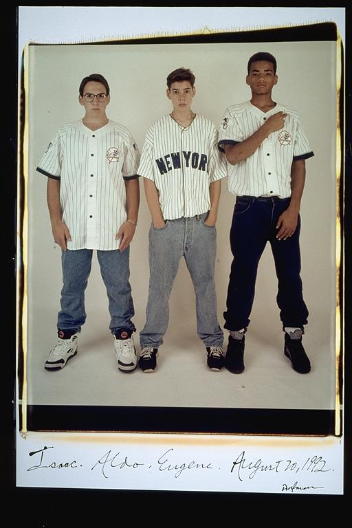

Pals: Boys Who Grew Up Together
elsadorfman.com/pals
Aldo: This was us at 15 years old. I seem to remember myself so differently, but this picture is probably much more accurate than my memory. This was an age when clothing was really becoming important. We all wanted to look good, to be perceived as hip. "Dress to impress," I think that's how it goes, and this is the age when we first learned it. Well, give or take a year, I guess.

elsad@comcast.net